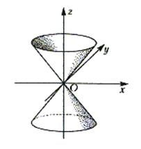

7.5.4. Конус

Эллиптическим конусом называется поверхность с
каноническим уравнением
Каноническое
уравнение эллиптического конуса
.
Сечения плоскостями –
эллипсы, размеры которых возрастают по мере удаления от начала координат;
сечения плоскостями, проходящими через ось  , –
скрещивающиеся прямые.
, –
скрещивающиеся прямые.
, –
скрещивающиеся прямые.